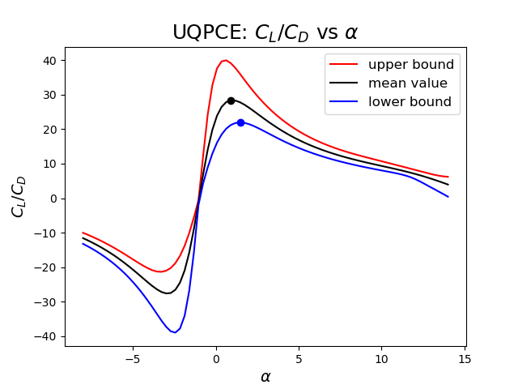
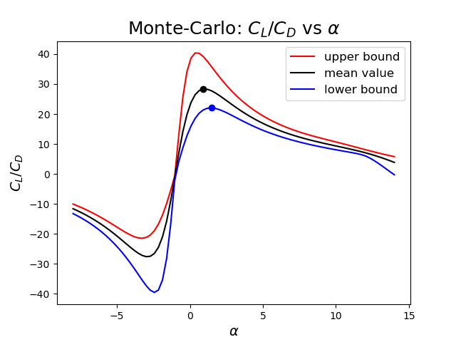
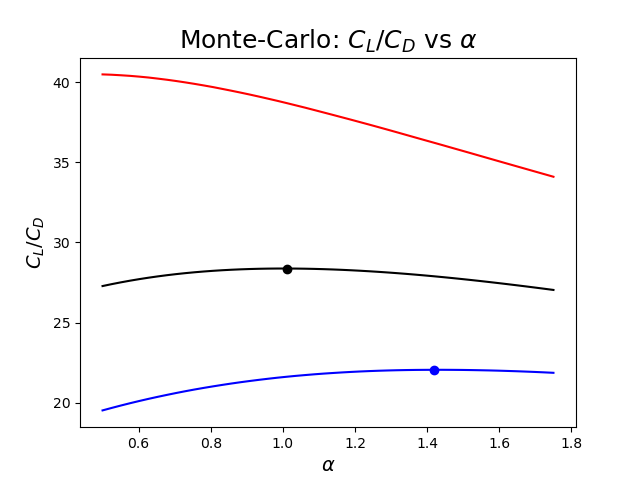
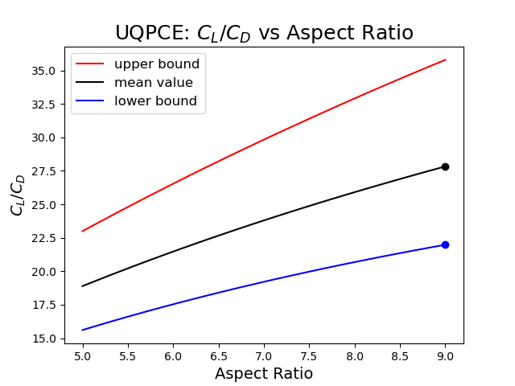
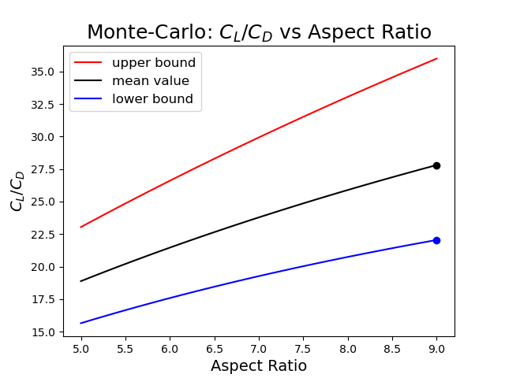
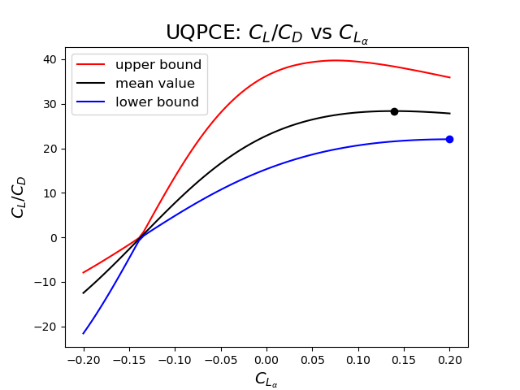
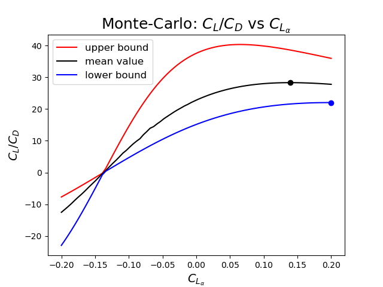
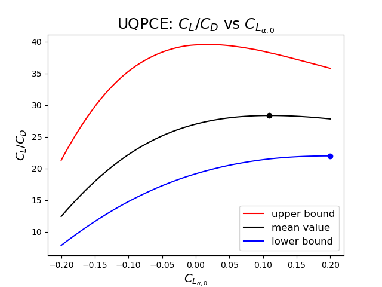
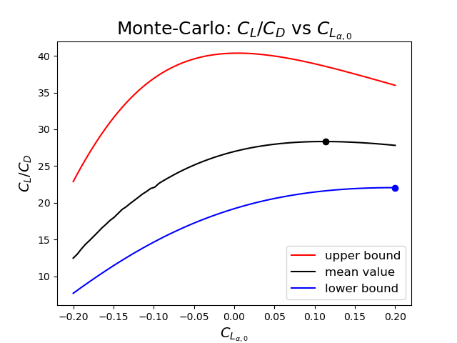

Uncertainty Quantificaion with OpenMDAO#
This section will cover the verification examples for a robust design optimization problem using the OpenMDAO framework.
Airfoil Example#
Below we will discuss a basic airfoil optimization problem.
Background#
The design variables are the angle of attack, \(\alpha\); the aspect ratio, \(AR\); *, \(C_{L \ \alpha, 0}\); and *, \(C_{L \ \alpha}\). The uncertain variables are the efficiency factor, \(e\); the zero lift drag coefficient, \(C_{D \ 0}\); *, \(C_{D \ \alpha, 4}\); and *, \(C_{L \ \alpha, 4}\).
Name |
Variable |
Distribution |
Parameters |
|---|---|---|---|
\(\alpha\) |
design |
range |
\([-8, 14]\) |
\(AR\) |
design |
range |
\([5, 9]\) |
\(C_{L_{\alpha, 0}}\) |
design |
range |
\([-0.2, 0.2]\) |
\(C_{L_{\alpha}}\) |
design |
range |
\([-0.2, 0.2]\) |
\(e\) |
uncertain, aleatory |
uniform |
\([0.7, 0.95]\) |
\(C_{D_{0}}\) |
uncertain, aleatory |
normal |
\(\mu=0.0075, \sigma^2=0.002\) |
\(C_{D_{\alpha, 4}}\) |
uncertain, aleatory |
normal |
\(\mu= 5 \times 10^{-6}, \sigma^2=5 \times 10^{-7}\) |
\(C_{L_{\alpha, 4}}\) |
uncertain, aleatory |
normal |
\(\mu=5 \times 10^{-5} , \sigma^2=1.5 \times 10^{-5}\) |
The below equations for \(C_L\) and \(C_D\) are implemented in components, with the \(\frac{C_L}{C_D}\) calculation in a group.
We are maximizing \(\big(\frac{C_L}{C_D}\big)_{CIL}\), which is the low 95% confidence interval. Choosing this objective sheilds our design from the “worst-case” scenario of a low lift-to-drag ratio.
Results#
Initial Point#
Mean of response -18.06
Variance of response 3.0802
95.0% Confidence Interval on Response [-21.827 , -15.059]
Upper-Bound Optimized Point#
Mean of response -27.877
Variance of response 13.103
95.0% Confidence Interval on Response [-35.898 , -21.938]
Mean Optimized Point#
Mean of response -28.401
Variance of response 19.27
95.0% Confidence Interval on Response [-38.545 , -21.477]
For the below figures, I varied one design variable while holding the others at their respective optimal values.
For these figures, UQPCE required 30 responses at each design variable value and the Monte Carlo required up to 5,000,000 to achieve the needed convergence.
 Fig. 30 \(C_L/C_D\) plotted against varying \(\alpha\) for UQPCE.# |
 Fig. 31 \(C_L/C_D\) plotted against varying \(\alpha\) for MC.# |
 Fig. 32 Zoomed in MC of \(C_L/C_D\) with comparisons of mean and CI of optimizing the mean versus lower bound.# |
{kind=link}
 Fig. 33 \(C_L/C_D\) plotted against varying aspect ratio for UQPCE.# |
 Fig. 34 \(C_L/C_D\) plotted against varying aspect ratio for MC.# |
 Fig. 35 \(C_L/C_D\) plotted against varying \(C_{L_{\alpha}}\) for UQPCE.# |
 Fig. 36 \(C_L/C_D\) plotted against varying \(C_{L_{\alpha}}\) for MC.# |
 Fig. 37 \(C_L/C_D\) plotted against varying \(C_{L_{\alpha, 0}}\) for UQPCE.# |
 Fig. 38 \(C_L/C_D\) plotted against varying \(C_{L_{\alpha, 0}}\) for MC.# |
Table 1: A comparison of optimization under uncertainty using UQPCE versus MC with different conditions.
Problem |
Samples |
\(\bf{\alpha}\) [deg] |
AR [unitless] |
\(\bf{C_{L_{\alpha, 0}}}\) [unitless] |
\(\bf{C_{L_{\alpha}}}\) [1/deg] |
\(\bf{{C_{L}/C_{D}}_{cih}}\) |
\(\bf{\Delta t}\) [s] |
Objective Executions |
|---|---|---|---|---|---|---|---|---|
MC + FD |
1,000,000 |
1.5282 |
9. |
0.1920 |
0.1934 |
22.0472 |
14120.7139 |
79310 |
MC + FD |
5,000,000 |
1.4229 |
9. |
0.2 |
0.2 |
22.0568 |
77688.4219 |
74594 |
MC + CS |
1,000,000 |
1.3903 |
9. |
0.2 |
0.2 |
22.0491 |
165.2988 |
877 |
MC + CS |
5,000,000 |
1.4265 |
9. |
0.2 |
0.2 |
22.0570 |
338.0230 |
527 |
UQPCE + FD |
30 |
1.3384 |
9. |
0.2 |
0.2 |
22.0167 |
1.9170 |
146 |
UQPCE + CS |
30 |
1.3384 |
9. |
0.2 |
0.2 |
22.0002 |
3.8285 |
82 |
UQPCE + analytic |
30 |
1.4257 |
9. |
0.2 |
0.2 |
22.0465 |
0.5076 |
16 |
Note
For all of the above cases, SNOPT was used with 'Major feasibility tolerance' = 1e-16 and 'Iterations limit' = 1000.